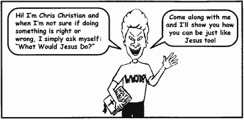
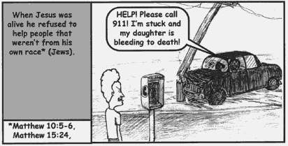
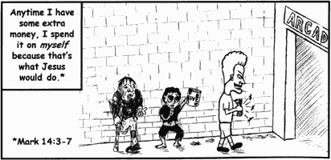
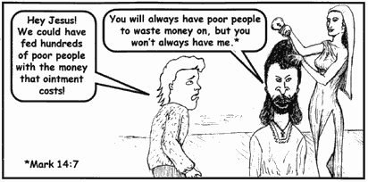
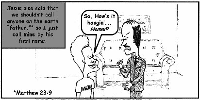

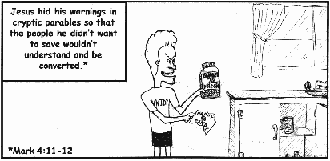
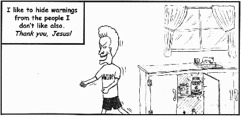
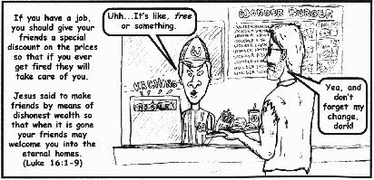
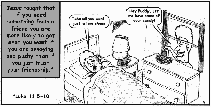
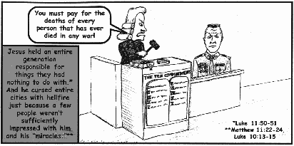

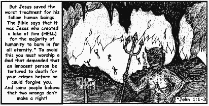
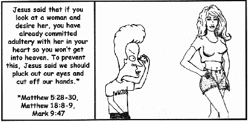
| © 2000 by Luciferian Liberation Front |
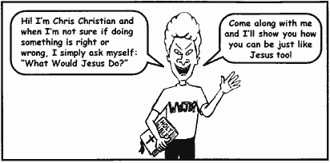
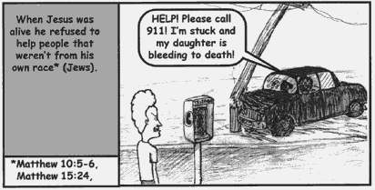
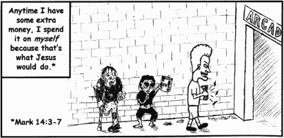
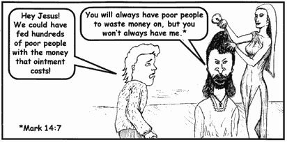
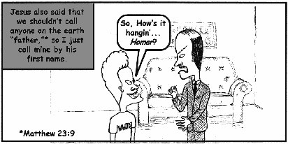
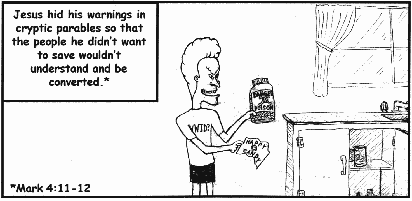
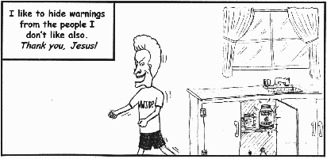
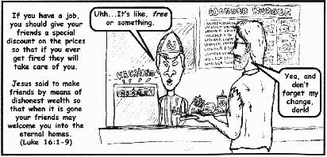
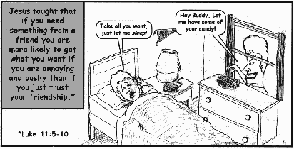
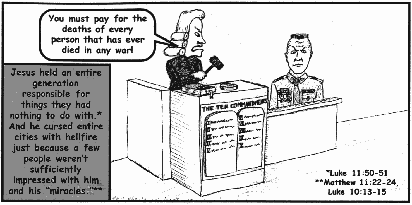
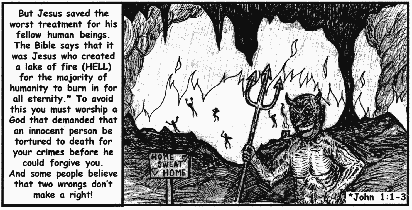
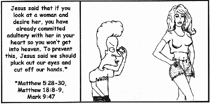

|
When confronted with difficult decisions in their lives, many people ask themselves, “What Would Jesus Do?” Fortunately, they think of Jesus as a gentle, loving and morally upright character. While in reality, the Bible paints a different picture about the nature of Jesus and the things he supposedly did. In truth, no one needs the poor example of morality that Jesus provided us. The time has come to stop blindly believing what others say about the Bible and Jesus and look at the truth for yourself. An AntiChrist Production from the Luciferian Liberation Front, People's Temple, Free Urantia. "Liberating the oppressed, one mind at a time." |